Foveon изнутри
Агрессивное восстановление цвета или раскрашивание
| Исходные RAW файлы: RAW файлы . |
|
| При помощи RAW parser получаем содержимое файла. Таким образом мы можем видеть отклик фотодиодов на сигнал без коррекции со стороны RAW конвртора. Нетрудно видеть, что изображение имеет ненасыщенные цвета. |
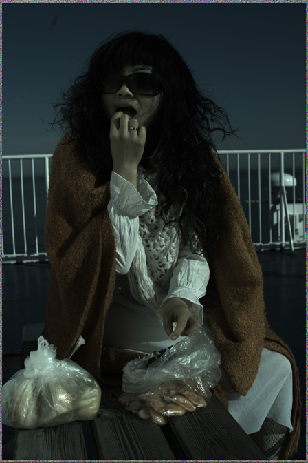 |
| А вот результат работы SPP - цвета вполне насыщенные. Как этого добивается конвертор? |
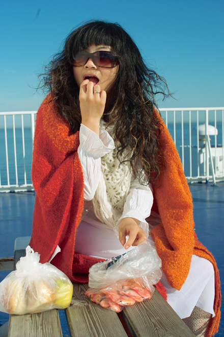 |
| Результат работы dcraw на этапе откоментированном автором как /* Transform the image to a different colorspace */. Это операция повышения насыщенности цветов |
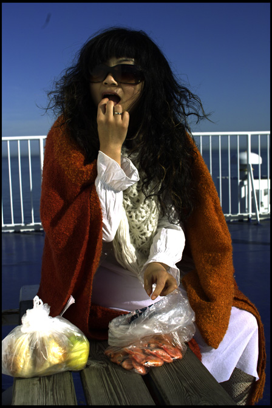 |
Результат раскраски первой картинки в Фотошоп при помощи Levels, Curves, Hue/Saturation.
Вследствии плохого цветоделения в слоях Фовеона описанного здесь, изображение требует восстановления цвета, которое и выполенено иструментом Hue/Saturation - проведено очень сильное увеличение насыщенности, разное для разных цветов.
Как видим изображение практически совпадает с тем что выдает конвертор, что означает сходность используемых алгоритмов. |
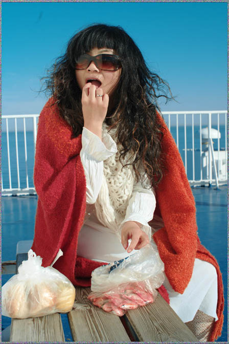 |
Нетрудно видеть, что с новой матрицей Merrill ситуация не изменилась.
Слева направо:
- данные из RAW после ББ и гаммакоррекции 2.2
- они же после усиления насыщенности
- камерный jpeg из RAW файла
|
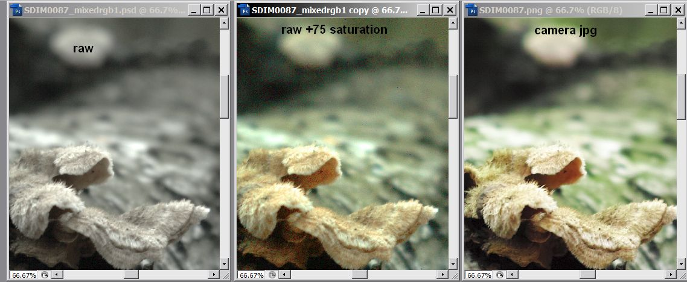 |
Слева Sigma SD14, справа Canon EOS-50D. Правый снимок “раскрашен” в Фотошоп при помощи Hue/Saturation
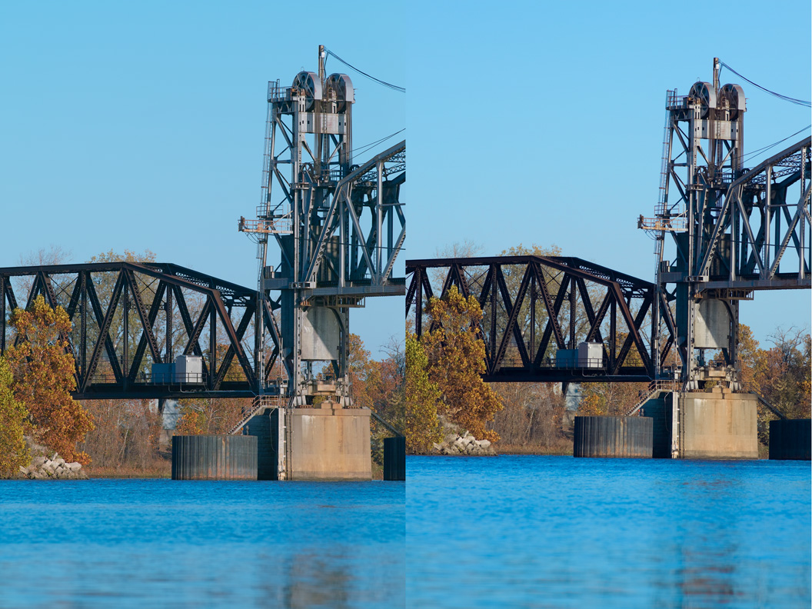
RAW данные, к которым применены поканально Levels для баланса белого и установки точки черного
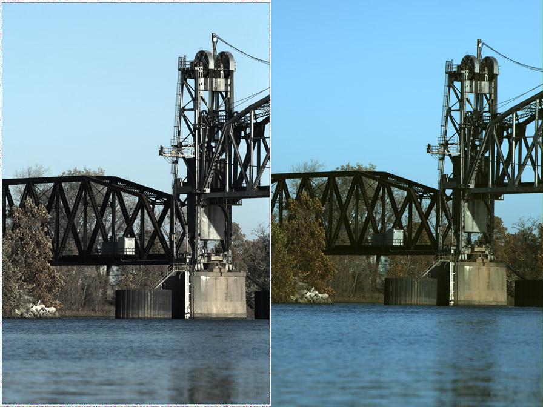
Динамический диапазон Фовеона или чем лучше делать снимки с высоким контрастом снимаемой сцены
Высокий уровень шума (у Sigma DP2s он в 2, а у DP2 Merrill в 4 раза выше, чем у такой старой и шумной камеры как Nikon D70 на ISO 200) и необходимость восстановления цвета путем сильного повышения насыщенности делает камеры на базе Фовеона малопригодными для фотографирофирования объектов с высоким контрастом. Обычная в таких случаях техника с недодержкой при съемке и последующего вытягивания сюжетноважной части с сохранением светов приводит к следющим результатам.
Для начала сделаем снимок с мягким дневным освещением на ISO 200 для получения референсных цветов. Камерa Sigma DP2s, баланс белого пользовательский по белому листу
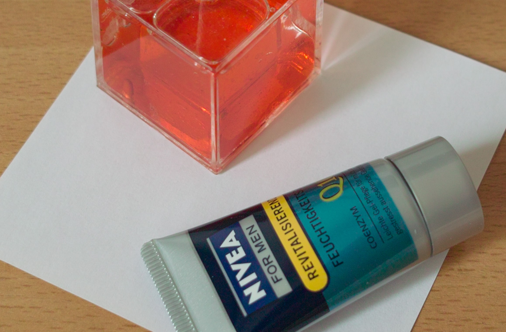
Теперь сделаем снимки в контрастном свете преследуя цель не допустить появления выбитых светов (“дыр” или “клипинга”). Для этого недодержим кадры на 1 2/3 стопа, используем баланс белого по белому листу. В качестве конкурента будет выступать Panasonic Lumix DMC-FT3
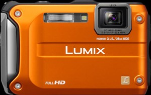
с 12 мп ПЗС матрицей размером 6.08 х 4.56 мм, т. е в 10.3 раза меньшей площади, чем матрица DP2s - 20.7 х 13.8 мм.
Для восстановления яркости применим к обоим снимкам следующую кривую
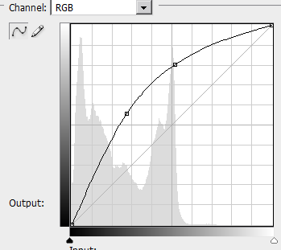
Кривая применена к камерному jpeg DMC-FT3, ввиду отсутствия у этой камеры RAW, и к 16 битному tiff полученному при помощи SPP 4 из RAW DP2s, снимок DMC-FT3 уменьшен до разрешения снимка DP2s, приведены 100% кропы центральной части кадра.
Найболее яркий участок - это блик на колпачке, кототрый мы стремимся передать без выхода из тонального диапазона - без белой дыры.
Panasonic Lumix DMC-FT3
| Exposure Time: | 1/160 sec |
| FNumber: | F3.3 |
| ISOSpeed Ratings: | 200 |
|
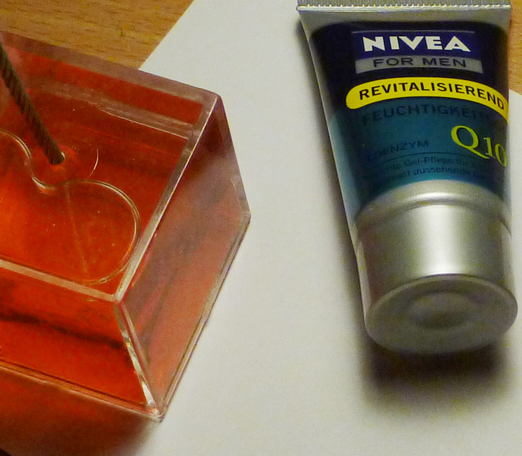 |
Sigma DP2s
| Exposure Time: | 1/160 sec |
| FNumber: | F3.5 |
| ISOSpeed Ratings: | 200 |
|
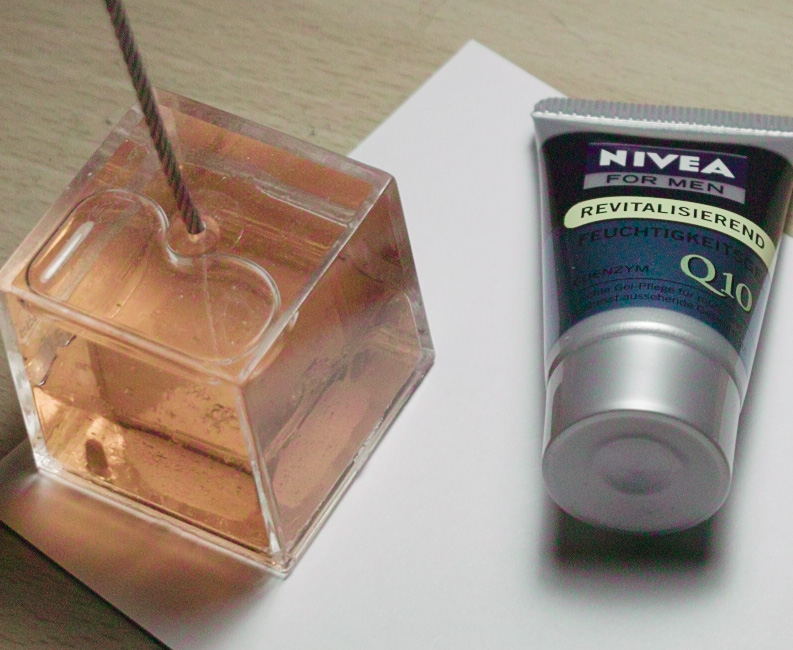 |
Итак: фотографирование контрастных объектов с сохранением тональных переходов в светах при помощи матрицы Фовеон (Sigma DP2s) приводит к существенной деградации цвета, появлению цветных пятен в темных участах и тенях. Изображение уступает даже снимку с компактной камеры с матрицей намного меньшего размера. Очевидно, что изображение с 14 мп Фовеона (Merrill) с более высоким уровнем шума будет ещё хуже в подобных условиях.
Вывод: камеры с матрицей Фовеон не могут быть рекомендованы для фотографирования в условиях высокого контраста снимаемой сцены.
Фотографируем пейзаж с высоким контрастом
| Первую пару снимков делаем без экспокоррекции, естественно наблюдаем пересветы на яркоосвещенном небе |
| Nikon D70 ISO 200 0eV |
Sigma DP2S ISO 200 0eV |
|
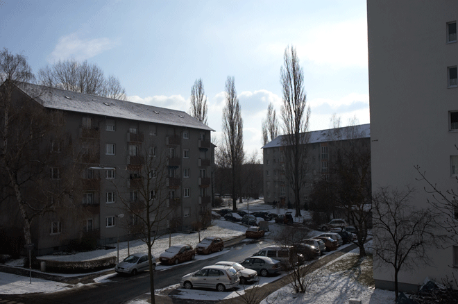
|
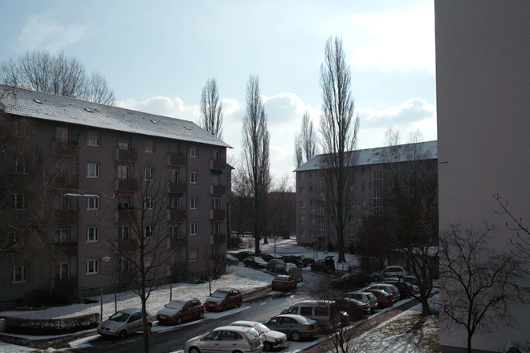
|
| Вместе с тем нижняя часть снимка вполне нормально экспонирована у обоих камер и имеет вполне нормальные цвета |
|
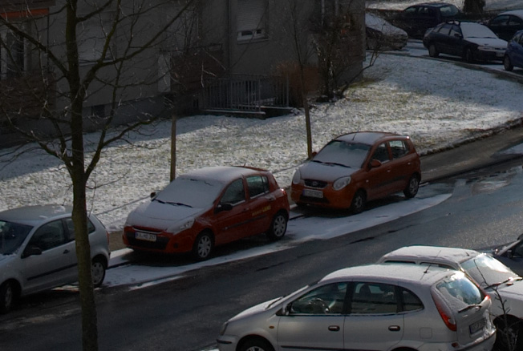
|
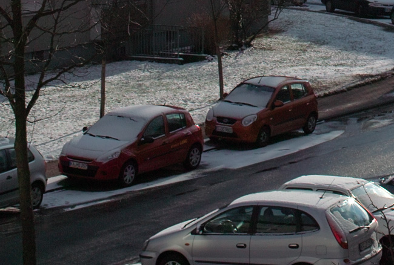
|
| Вторая пара в экспокоррекцией -1 не решает полностью проблему пересветов на небе |
| Nikon D70 ISO 200 -1eV |
Sigma DP2S ISO 200 -1eV |
|
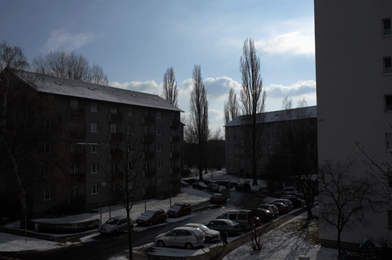
|
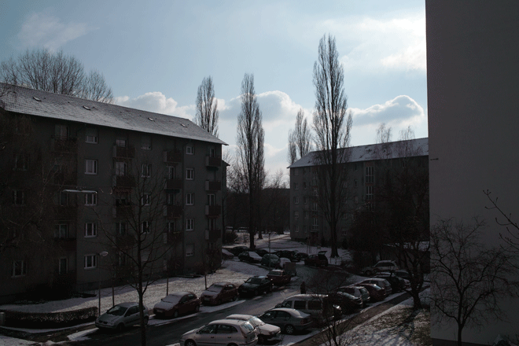
|
И только экспокоррекция -2 полностью устраняет пересветы на небе.
Я осветлил нижню часть снимка используя простую маску, в реальном снимке она должна быть более сложной, но для демонстрации это не имеет значения |
| Nikon D70 ISO 200 -2eV |
Sigma DP2S ISO 200 -2eV |
|
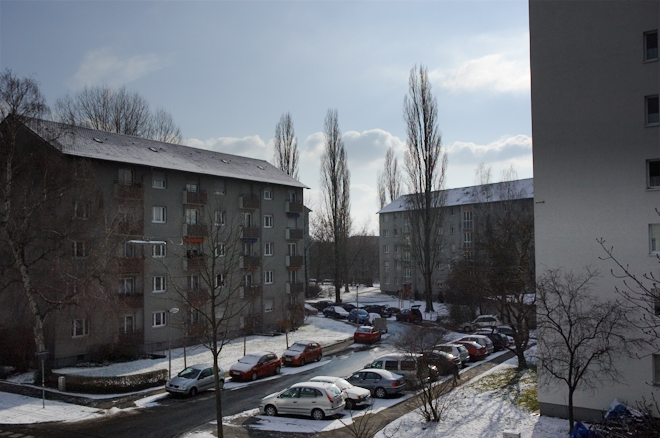
|
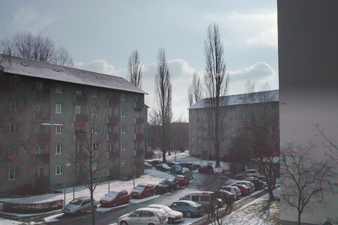
|
| 100% кроп демонстрирует цветовые пятна и падение насыщенности у снимков с Фовеона, которое не наблюдается у D70 |
|
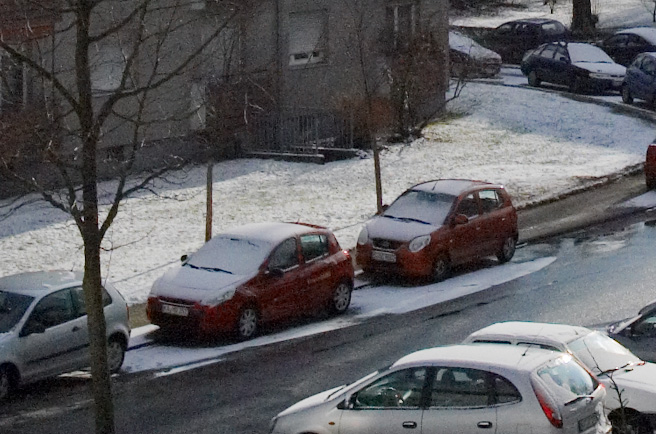
|
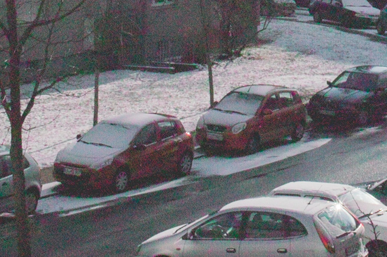
|
| 100% кроп Panasonic Lumix DMC-FT3 (с 12 мп ПЗС матрицей в 10.3 раза меньшей площади) демонстрирует примерно такое же качество изображения на ISO 100 и с экспокоррекцией -2 eV, как и Фовеон |
|
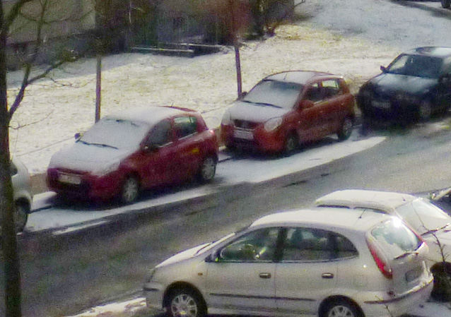
|
|
Вывод: камеры с матрицей Фовеон не могут быть рекомендованы для фотографирования в условиях высокого контраста снимаемой сцены.
Шумоподавление в SPP
| Шумоподавление в SPP для матрицы Merrill имеет место даже для низких ISO. Ресультат конвертирования темнового кадра (полный кадр доступен по щелчку мыши) |
| Model: SIGMA DP2 Merrill, 1/200 sec, ISO 200 |
Model: SIGMA DP2S, 1/200 sec, ISO 100 |
|
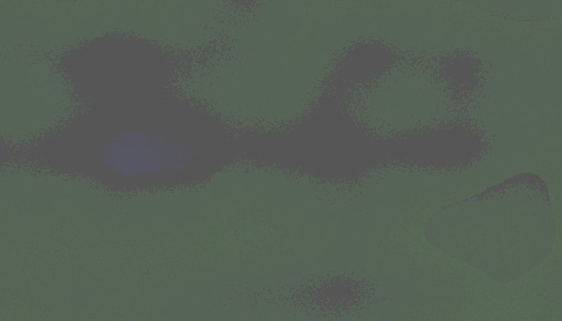
|
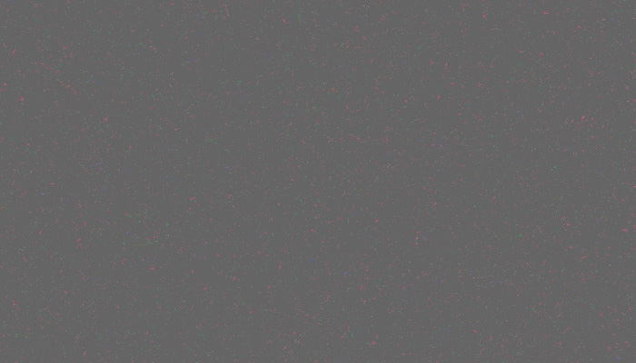
|
| Пространственные спектры изображений это подтверждают |
|
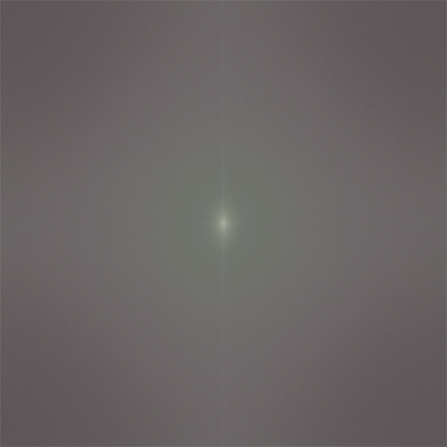
|
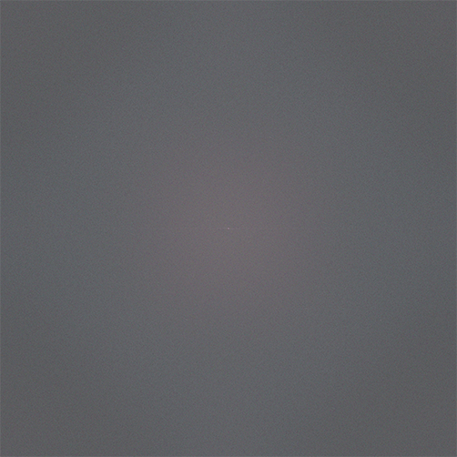
|
| Найболее ярко результаты шумоподавления видны на ISO 3200 |
|
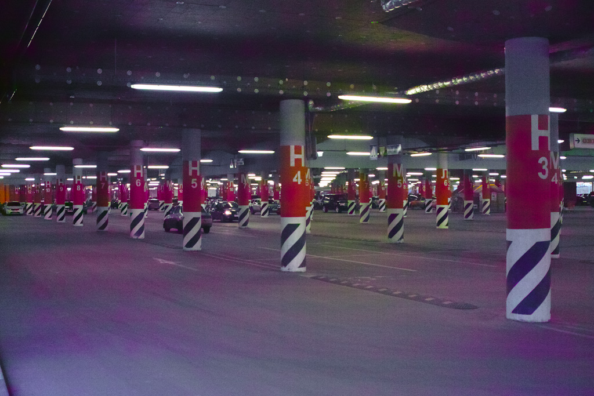
|
| 100% кроп центральной части кадра из RAW, небольшой ББ, гамма 3, наложенный на результат работы SPP |
|
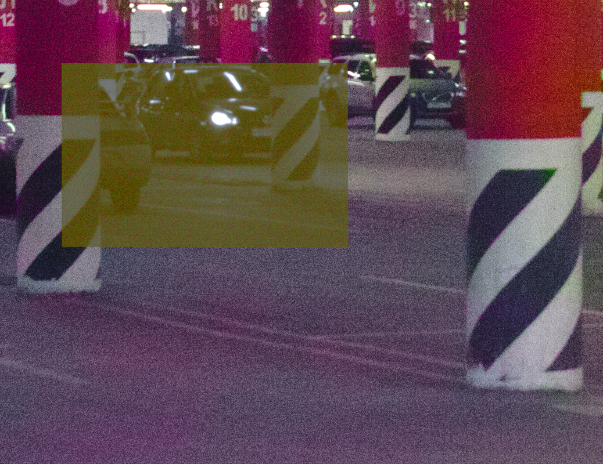
|
Причина столь активного шумоподавления состоит в том, что восстановление цвета есть цветоразностная операция, то есть операция вычитания одного канала из другого, причем с примерно равными весами. Это приводит к тому, что конечный результат намного шумнее исходного, что и было предсказано ещё до выхода первых камер.
Реальное ухудшение составляет для DP2s от 3 до 4 раз:
raw
Disper. values 48.7 dB (8.1 eV) 50.2 dB (8.3 eV) 42.7 dB (7.1 eV)
восстановленный цвет (без использования SPP)
Disper. values 40.1 dB (6.7 eV) 39.1 dB (6.5 eV) 33.8 dB (5.6 eV)
Такое поведение объясняет почему ни одна камера с сенсором Foveon так и не была протестирована DxO - сравнение с RAW других камер бессмысленно из-за неизбежного увеличение шума после восстановления цвета необходимого для Foveon и отсутствующего у “байеровских” камер.
Синтетический RAW и SPP
Alex Tutubalin предложил интересную идею теста конверторов. Мне было интересно, как поведет себя SPP при работе с такой картинкой. Кроме того я добавил в синтетический RAW дополнительные объекты, описанные ниже.
Синтетический RAW создан специальной программой, распаковывающей оригинальный RAW, заменяющей часть пикслелей пикселями из другого файла (PSD 16 бит на канал) и запаковывающей новый RAW в соответствии с требованиями формата x3f.
Использован снимок с ISO 50 при котором числовые значения в x3f файле максимальны, уровень белого мишени на 2 стопа ниже уровня насыщения матрицы. Следует учесть, что конвертор сначала показывает камерный jpeg, встроенный в x3f, а только потом результаты конвертирования.
Вставленная мишень представлена ниже (щелкните мышкой, что бы открыть 100% вид). Мишень содержит оригинальную мишень Alex Tutubalin-a, it8 мишень, портрет Лены, портрет Лены из RAW файла, содержащего фотграфию оригинального портрета сделанную камерой Sigma DP2s (по сути данные из одного RAW вставленные в другой RAW, используются для контроля корректности генерации синтетического RAW), однопиксельные поля, поля с шумом, градиенты в цветах, как они записываются в файл x3f..
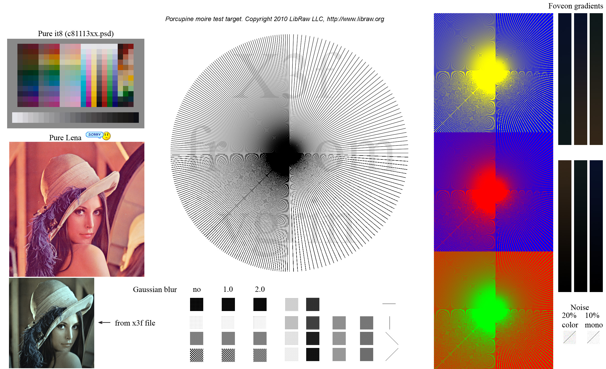
Результат конвертирования представлен ниже, все настройки конвертора установлену в ноль. (щелкните мышкой, что бы открыть 100% вид Изображение в цветовом пространстве ProPhotoRGB, Ваш брозер может показывать его неверно).
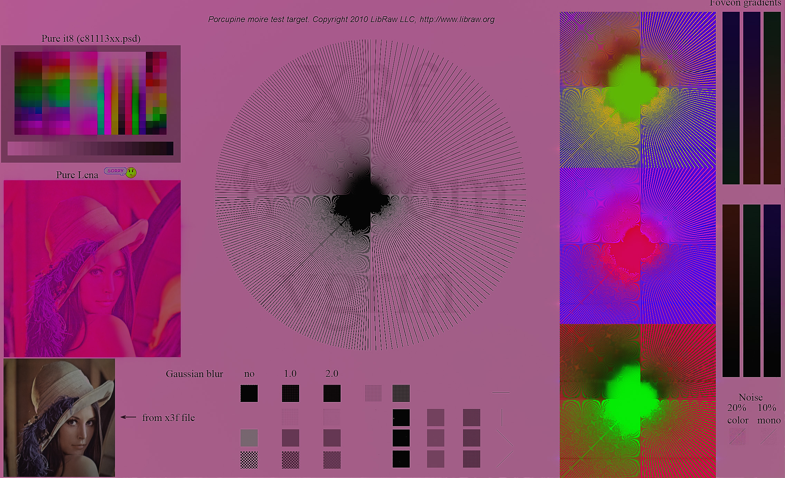
Фотграфия Лены из RAW обработана правильно, так же правильно обработаны градиенты справа, сделаем баланс белого пипеткой SPP (щелкните мышкой, что бы открыть 100% вид Изображение в цветовом пространстве ProPhotoRGB, Ваш брозер может показывать его неверно).
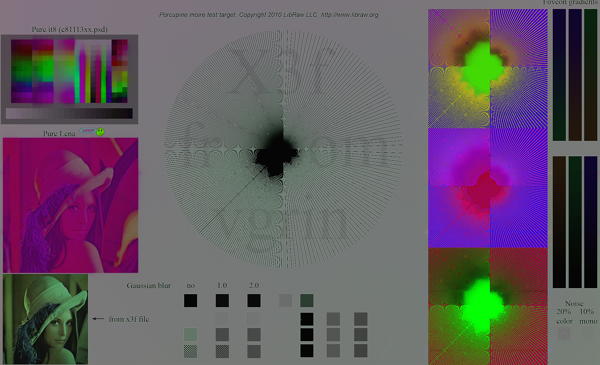
Первое что бросается в глаза - это появление зеленой окраски. Это связано с тем, что в SPP два баланса белого, один настоящий до всех операций, потом идет восстановление цвета (как он выглядит в видно по маленькой Лене), которое я называю раскрашиванием, а потом пипетка/цветовой круг. Соответсвенно, если первый ББ не кастомный по серой мишени, то будет ошибка после раскрашивания, которюю второй ББ уже исправить не может. Сделать первый ББ по пипетке разработчики не захотели, потому как раскрашивание идет очень долго, useability была бы плохой. Первый ББ выбирается из набора в комбо-боксе, 8-9 вариантов.
В этом серьёзное отличие и недостаток Фовеона от матриц на основе массива фильтров Байера у которых ББ в конверторе независимый от ББ при съемке является большим преимуществом.
Вывод: установка пользовательского баланса белого перед съемкой по серой карте - необходимое условие хорошего снимка для матрицы Фовеон
Далее мы будем использовать мишень с ББ совпадающим с ББ исходного рав и пипеткой пользоваться не будем. Выглядит он так, как представлено ниже, области фотографии Лены и градиентов ББ не подвергались.
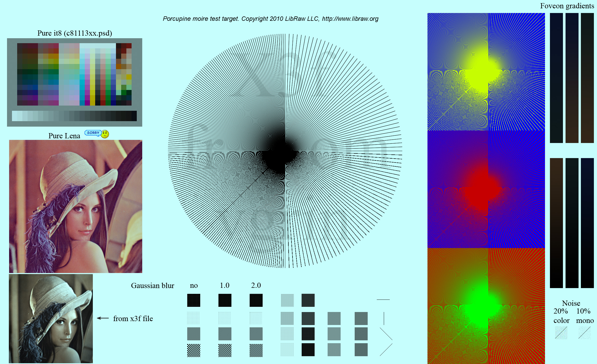
Результат конвертирования представлен ниже, все настройки конвертора установлену в ноль. (щелкните мышкой, что бы открыть 100% вид Изображение в цветовом пространстве ProPhotoRGB, Ваш брозер может показывать его неверно).
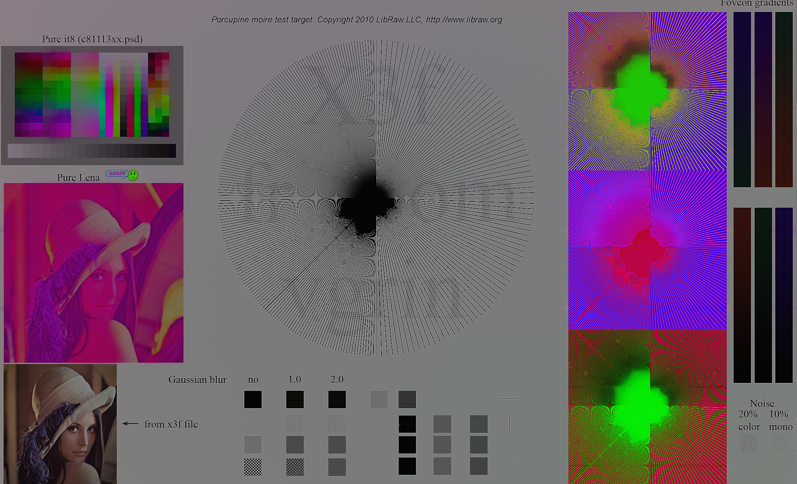
|
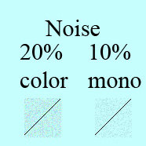
|
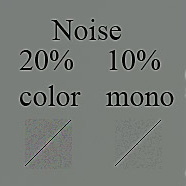
|
демонстрация неоключаемого шумоподавления и усиления резкости, при установке Sharp=0, реальный ноль соответсвует установке Sharp=-0.8
|
|
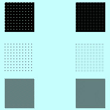
|
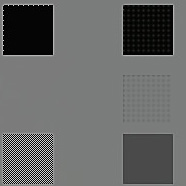
|
демонстрация удаления отдельных пикселей
|
Удаление пикселей на реальном снимке, слева направо: камерный jpeg, dcraw, SPP, ACR
|
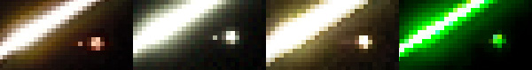
|
|
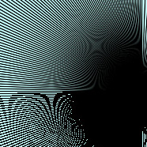
|
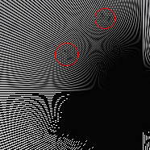
|
демонстрация артефактов обработки
|
Так же на it8 хорошо видна работа восстановителя цвета-раскрашивателя совместнос с шумоподавлением.
Теперь вставим мишень затемнив её на 2 стопа и вводя экспокоррекцию +2 в SPP, все остальные настройки конвертора установлену в ноль, результат представлен ниже (щелкните мышкой, что бы открыть 100% вид Изображение в цветовом пространстве ProPhotoRGB, Ваш брозер может показывать его неверно).
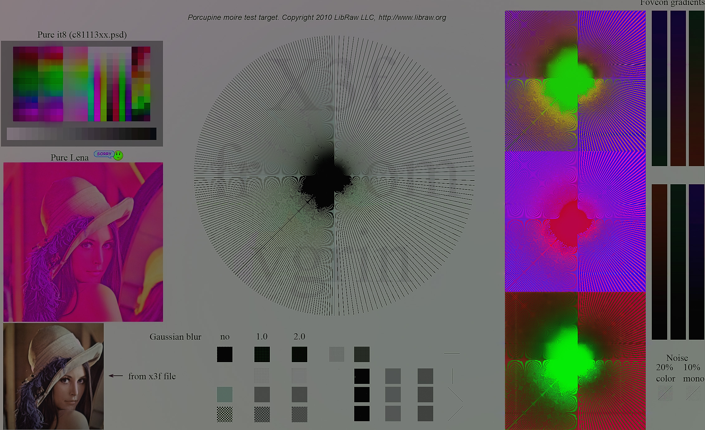
Наблюдаем паразитные оттенки в ахроматических областях, искажение цветов и постеризацию градиентов. Наблюдаемые явления находятся в полном соответсвии с результатами тестов в Фотографируем пейзаж с высоким контрастом
Набор x3f файлов может быть загружен по этому линку для самостоятельного исследования.
Проверка содержимого x3f может быть осуществлена при помощи бесплатных программ с открытым кодом dcraw и Proxel X3F Tools
Попиксельная резкость или алиасинг
Утверждается, что снимки сделанные камерами с матрицей Фовеон обладают попиксельной резкостью. Так ли это или это всего лишь алиасинг, как следствие отсутсвия антиалиасингово фильтра?
Сфотографируем мишень Norman Koren камерой с АА фильтром и цветовым массивом Байера и Sigma DP2s и построим профиль пикселей
|
Камера с АА демонстрирует затухание пространственных частот, как результат работу АА фильтра, который является по-сути фильтром низких частот.
|
|
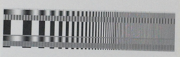
|
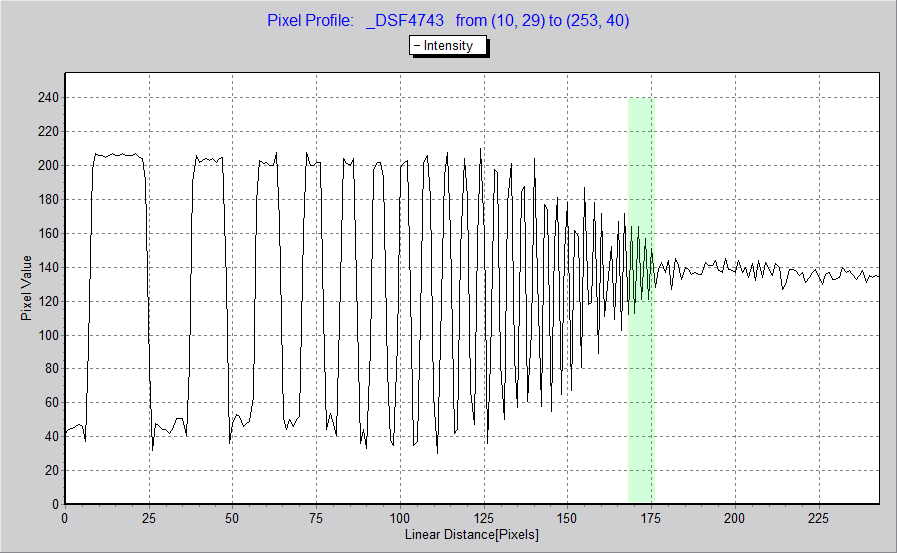
|
|
|
|
С другой стороны камера с матрицей Фовеон демонстрирует типичую картину интереференции пространственных частот изображения и частоты пикселей в матрице именуемой “биениями”.
|
|
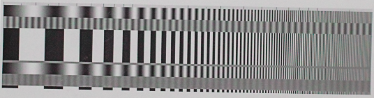
|
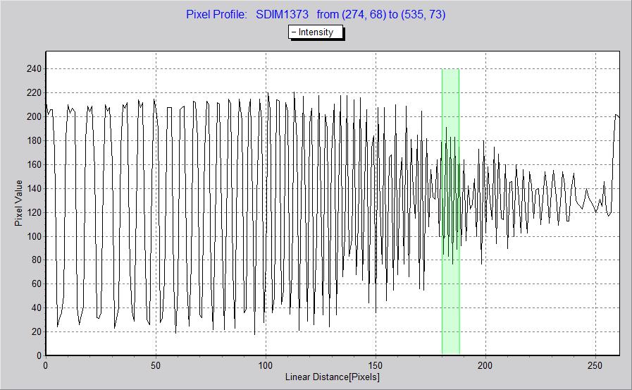
|
Упрощенная модель, в которой мишень с переменной частотой штрихов описывается формулой:
t(x)=sin2(5x*e0.02x),
MTF объектива описывается формулой:
l(x)=e-0.2x/(1 + e-0.2x),
а их совместное поведение:
lt(x)=l(x)*(t(x)-0.5)+0.5=e-0.2x/(1 + e-0.2x)*(sin2(5x*e0.02x)-0.5)+0.5,
дает следующую картину при частотах "самплирования" 0.1 и 1, при этом "единичная частота" наблюдается при x примерно равном -12
|
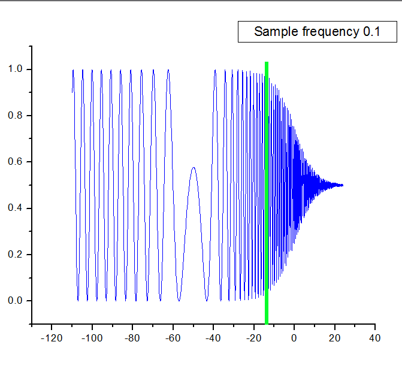
|
|
Модель демонстрирует те же несуществующие частоты при x > -12 при частоте семплирования равной 1, что и картинка с Фовеона
|
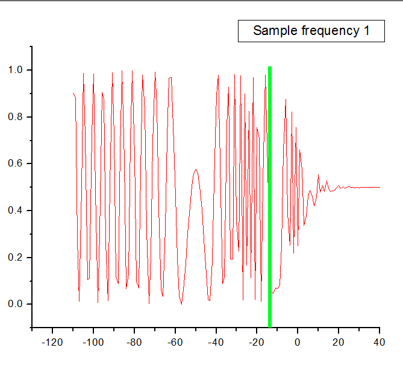
|
|
Так же подобную картину демонстрирует анимация из статьи Aliasing на wikipedia.org.
|

|
Links:
Про Foveon
All contents
copyright © vgrin, first published February 2, 2008. Ver 4.20, May 2, 2015